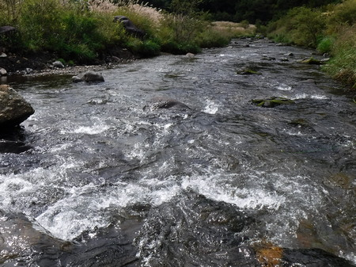

釣行日誌 故郷編
2019-09-22 思い起こせばこの日はボウズ
今日は、叔父に黙って抜け駆け。（笑）
レンタカーで高速を順調に北へ。いつものコンビニで、おにぎりと入漁券をを買う。店員のおばさんにしっかり顔を覚えられている。
始めて釣る区間を選び、お弁当を食べてから、のんびりと橋詰から入渓。One trick pony ... の台詞通り、ダイワのドクターミノー、フローティング 50mm にて釣り下る。下流には誰の姿も見えない。
大石がゴロゴロしているポイントで１尾ヒット。しかし取り込みに失敗して逃げられる。もう少し近くまでリーリングして寄せるべきだった。最後の瞬間に、魚体がネットに触れてフックアウト。まずまずのイワナだった。（負け惜しみ）

始めて来てみたが、なかなか良いポイントが連続して、見込みがありそうだ。
と、なんと下流からフライフィッシャーマンが遡行して来るのが、遠目に見えた。こりゃイカン.....ということで、河岸を変え、別の渓の馬小屋のあるポイントへ移動する。
この近くに、叔父がスピナーで掛けたものの、ランディングネットを持っていなかったばかりに釣り落とした大物を狙う。あちこちしらみつぶしにミノーを引いてみるが、小物も出ない。
ずっと釣り下る。良いポイントが連続するが出ない。
大渕の通らずに出たので、そこから先へは行けず、休耕田に上がって戻ることとなる。クマが出そうで怖い。
ワンパターンではあるが、お約束の「爆釣の淵」へ移動。激戦区なので、ここも先行者あり。回り込んで藪こぎして、はるか下流から入る。
釣り下って行くと、ライズあり。ライズをルアーで釣るのは難しいと知りつつ、ちょっかいを出してみる。幸運にも、浅場でヒット、しかし外れる。何と言うこと！ フックにラインが絡んでいて、鈎掛かりが浅かったようだ。
暗くなる前に、大きな堰堤へ移動して、ヘッドライトを装着していたら、だんだんと暗くなってきた。真っ暗な中釣り始める。
何も見えない。おまけに雨まで降り出した。これは、納竿のサインだな、とあきらめを付けて、クマを恐れつつ車に戻る。
レンタカーの後部ハッチを開けて、釣り支度を片付ける間も、背後から黒い毛むくじゃらが近寄ってくるのでは？ と気が気でない。（笑）
帰りはいつものカレー屋さんに寄って夕食。いつだったか辛いヤツを注文して懲りたので、今日は甘口を頼んだ。甘すぎてかぼちゃスープのようだった。
あれ？ 魚の写真が無いと言うことは、今日はボーズだったのか！（泣）
釣行日誌 故郷編 目次へ
サイトマップ
ホームへ
お問い合わせ